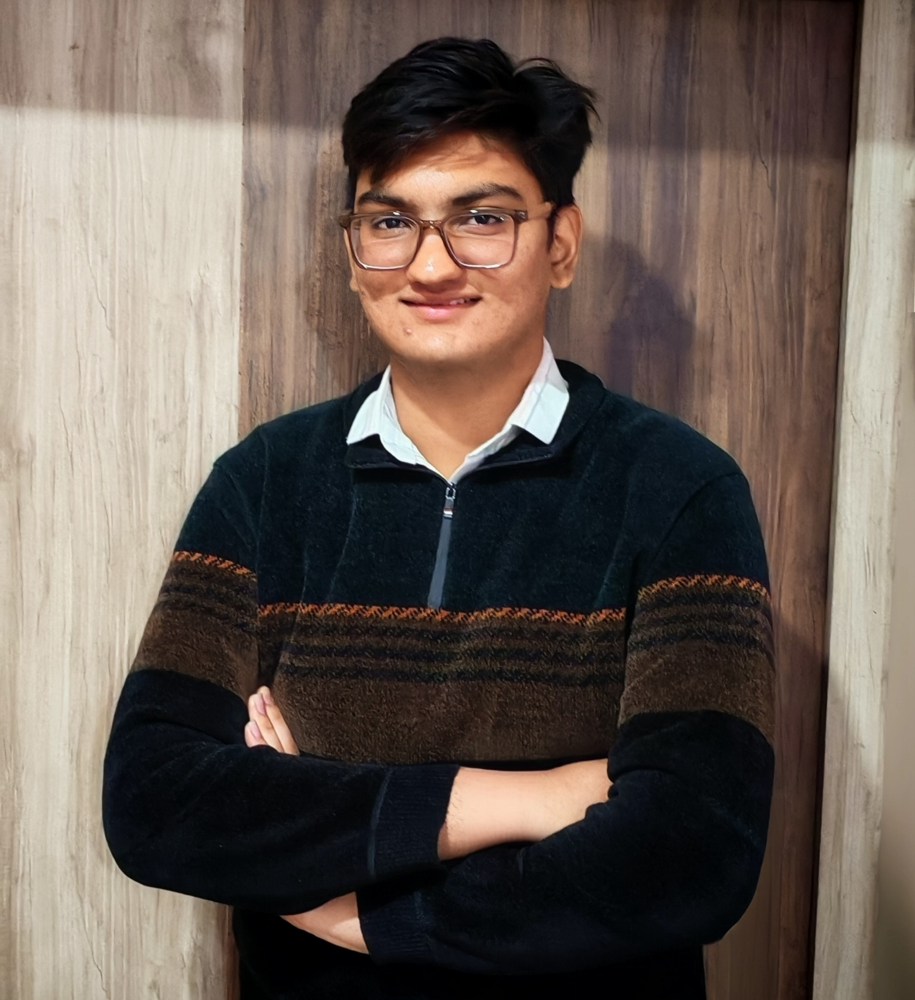

Robotics Engineer
B.Eng. Robotics (5th Semester)
Schweinfurt Würzburg
Specializing in Machine Vision, Embedded Systems & Automation. Passionate about industrial, mobile, and humanoid robotics with hands-on experience in C++, MATLAB, and RoboDK.

Robotics Engineer with a Passion for Innovation
I'm a 5th-semester Robotics Engineering student at Technische Hochschule Würzburg-Schweinfurt, actively seeking internship opportunities in Germany. My journey in robotics combines theoretical expertise with hands-on practical experience.
I have a strong interest in industrial, mobile, and humanoid robotics, as well as machine learning and image processing. Through academic projects, I've developed practical skills in C++, embedded systems, RoboDK simulation, and MATLAB machine vision.
My goal is to contribute to cutting-edge robotics projects that push the boundaries of automation and autonomous systems while continuously expanding my technical knowledge.
Machine Vision & Embedded Systems in Industrial Robotics
Robotics B.Eng. | GPA: 3.3 | Active in Robotics Labs
Internship in Industrial Robotics, Automation, or Machine Vision
Interactive showcase of robotics, embedded systems, and machine vision work
December 2025
Implementation and testing of pick-and-place robot programs for a 6-DOF KUKA industrial robot using RoboDK. Verification of simulated motion paths to identify kinematic errors and improve trajectory accuracy.
Key Achievements:
Tech Stack: RoboDK, KUKA.SIM, Python API
Download KUKA Simulation GitHub SourceNovember 2025
Color-based object recognition in MATLAB using Image Processing & Machine Vision Toolboxes. Includes centroid/orientation extraction, homography transformation to world coordinates, and UR5e robot integration.
Key Achievements:
Tech Stack: MATLAB, Image Processing Toolbox, RoboDK, UR5e
May 2025
Design and build of an autonomous line follower using Arduino Nano and CNY70 sensors. Implements Proportional (P) control and interrupt-driven PWM motor regulation for smooth trajectory following.
Key Achievements:
Tech Stack: Arduino Nano, C, PWM, Interrupt Handlers
Building expertise through rigorous engineering studies
B.Eng. Robotics
October 2024 – Present (5th Semester)
Current GPA: 3.3
Comprehensive robotics engineering program combining hardware design, embedded systems, and intelligent automation principles.
Relevant Coursework:
Foundation Program for Engineering Studies
November 2023 – August 2024
Intensive preparatory program focusing on advanced mathematics, physics, and engineering fundamentals to prepare for university-level technical studies.
Focus Areas:
Tools, languages, and expertise
• C++ - Core language for embedded & robotics
• Python - Scripting, automation, data analysis
• MATLAB - Machine vision & signal processing
• RoboDK - Robot simulation & offline programming
• Arduino IDE - Microcontroller development
• LT-SPICE - Circuit simulation
• Microsoft Office - Documentation & presentations
• Canva - Visual design
Gujarati
Native Speaker
English
Fluent (Professional)
Hindi
Fluent
German
B1 Level (Active Development)
• Chess 960 - Competitive variant chess
• Cooking - Exploring culinary traditions
• Traveling - Exploring Germany & beyond
• Robotics Communities - Networking & knowledge sharing
• Tech Innovation - Following emerging robotics trends
Core Robotics
Industrial robot programming, collaborative robotics (UR5e), kinematics & dynamics, trajectory planning, pick-and-place automation.
Embedded Systems
Bare-metal programming, microcontroller development, real-time systems, PWM control, interrupt handlers, sensor integration.
Machine Vision
Image processing, object recognition, color-based segmentation, homography transformation, camera calibration, coordinate mapping.
Control Systems
PID control, feedback mechanisms, system modeling, signal processing, digital filters, proportional-integral-derivative tuning.